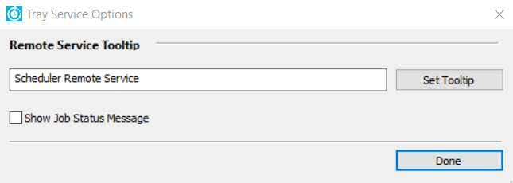
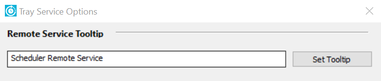
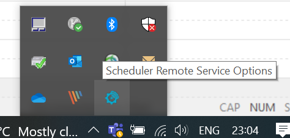
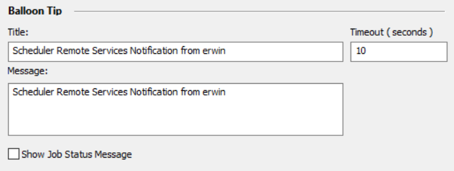
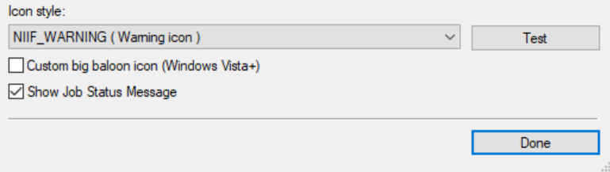
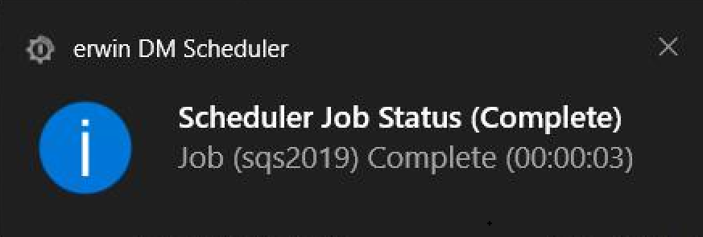

Setting Up Tray Service Options
You can set up custom tooltip name, notification balloon title, and message for your machine using the Tray Service Options pane. The tray service options are applicable for reverse engineering from remote sever connection
To set up tray service options, follow these steps:
- On the ribbon, in the Settings group, click Tray Service Options.
The Tray Service Options pane appears.

- Under the Remote Service Tooltip Text section, enter a tooltip name for the remote service icon.

- Click Set Tooltip.
This sets the new tooltip name for the remote service icon.
On the Overflow (Show hidden icons) section of the windows taskbar, hover over the remote service icon to view the updated tooltip.

- On the Balloon Tip section, you can add a custom title, message, and set timeout for the windows notification messages.

- On the Icon style section, select an icon style. This updates the icon style on the windows notification messages.
Apart from selecting an icon style, use the following notification options:- Custom big balloon icon (Windows Vista): Select this option to display a bigger icon on the windows notifications. This option is only applicable for Windows Vista.
- Show Job Status Messages: Select this option to display the message in the windows notifications.

- Click Test.
The windows notification message appears based on the above configuration.

- Click Done.
The tray service options are saved.